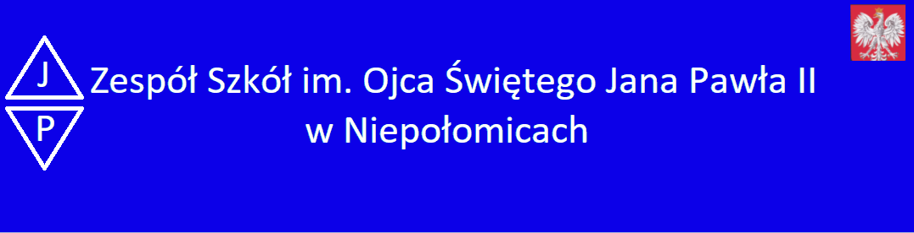

Dyrekcja
Dyrekcja
Dyrektor – mgr Barbara Wiśniowska
V-ce Dyrektor – mgr Artur Maciuk
V-ce Dyrektor mgr Wacław Sternal
Sekretariat :
Monika Szewczyk
Sekretariat czynny w dni powszednie w godzinach
od 8:00 do 16:00
Stronę szkoły opracowali: Kacper Szczudło i Adam Cieśla 3TIP/G